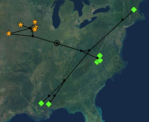
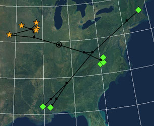
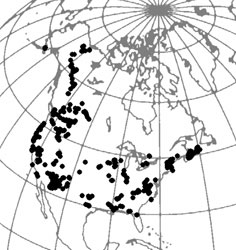

Display Options
Scale to Fit
The Scale to Fit option will shrink the map so that it fits within the window. If this option is not chosen, the map will be full size, and thus you will likely only be able to see a small portion of the map at any one time.
Latitude-Longitude Grid
The Plot>Show Grid menu item allows you to turn on and off the drawing of a latitude-longitude grid:
 |
 |
Without grid |
With grid |
The grid is primitively drawn, consisting of a series of short, straight line segments. We hope to improve this in the future.
The Plot>Grid Parameters dialog box allows you to change the grid's starting points and intervals. For example, if you wanted a grid with latitude and longitude lines every 15 degrees, then in that dialog box set the latitude and longitude intervals to be 15. If you want the grid to not begin at 0 latitude and 0 longitude, then you can also change the starting point of the grid.
The color of the grid can be changed with the Plot>Grid Color submenu.
Fading the Base Map Image
The base map can be faded somewhat by choosing Plot>Fade Base Map:
 |
|
Normal map |
Faded map |
Symbols
Changing the shapes, sizes, and colors of symbols is documented in the page on Taxon Symbols.
Taxon Names
To turn off the display of taxon names, turn off Drawing>Names>Show Taxon Names.
Calibration Points
To hide calibration points, turn off Plot>Calibration Points>Show Calibration Points.